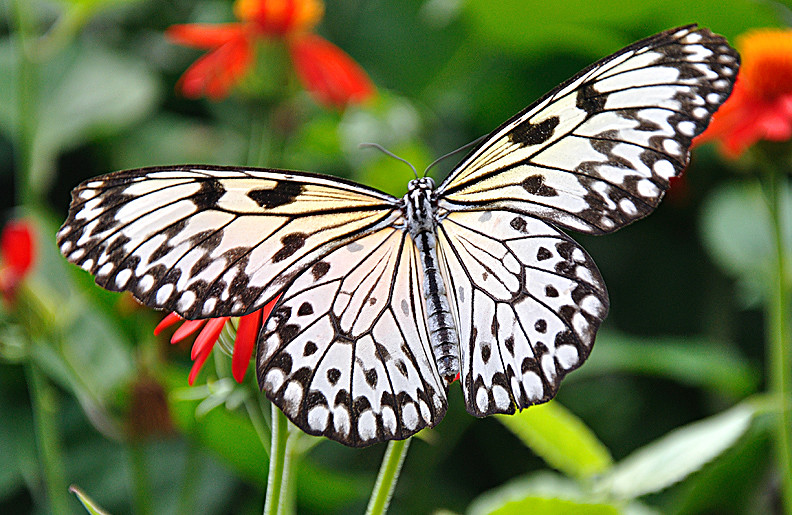
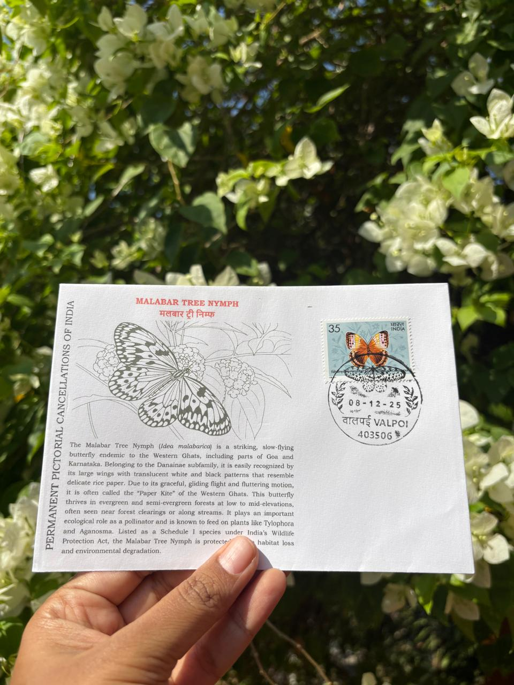

Malabar Tree Nymph
माळबार ट्री-निम्फ

The Malabar tree nymph is scientifically known as Idea malabarica Moore, 1877, and is a large and distinctive butterfly belonging to the family Nymphalidae, subfamily Danainae . Its wings are largely translucent white with stark black veins and spots, spanning between 120 and 154 mm—making it one of the largest butterflies in India. Locally referred to as the “paper kite” butterfly, its slow, gliding flight gives it a serene presence in the canopy.
The species inhabits the moist evergreen and semi-evergreen forests of the Western Ghats, thriving especially in riparian zones near streams, springs, and myristica swamp vegetation. In Goa’s hinterland—especially regions like Sattari, Sanguem, Dharbandora, and Canacona—it has been recorded in dense, undisturbed forest patches with perennial water sources. The species' ecological relationship with Valpoi arises from its location in north-Goa, where forested valleys and springs provide ideal habitat, especially in sanctuary and sacred grove areas.
In terms of conservation status, Idea malabarica is classified as Near Threatened on the IUCN Red List, with threats primarily from habitat loss through deforestation and pesticide use. In India, it is legally protected under Schedule II of the Wildlife (Protection) Act, 1972 . The Government of Goa further highlighted the need to preserve its habitat when, in December 2021, it designated the Malabar tree nymph as the official state butterfly. Experts and ecologists emphasized that protecting this species helps safeguard freshwater-dependent forest ecosystems in the region.
Regarding abundance, populations are naturally localized. Sightings are more frequent during and shortly after the monsoon season when caterpillars emerge and adults glide among forest canopies . In Valpoi and similar locales, researchers report sightings from January, March, and as late as December. While not common across all forest types, their presence in riparian, myristica, and sacred grove ecosystems suggests relatively stable but fragile populations that depend on intact microhabitats.
The Malabar tree nymph’s life cycle is tightly interwoven with its host plants in the Apocynaceae family, notably Aganosma cymosa and Parsonsia spiralis. Females lay one to four tubular eggs on the underside of these leaves; the caterpillars hatch, consume the leaf’s internal tissue, and feed from the underside—minimizing exposure to predators. These plants often contain toxic compounds, which the caterpillars sequester, making the adult butterflies distasteful to predators—explaining their slow, unhurried flight.
In the Valpoi region, conservationists note that the level terrain and small valleys, combined with perennial water sources, support Idea malabarica. Sacred groves, like Nirankarachi Rai near Nanoda and Maloli, provide insulated microhabitats where the species continues to be observed. Local environmental groups sometimes conduct butterfly walks and school outreach programs to raise awareness—using the species as an indicator of forest health and freshwater stability.
Relevant Images

Private Cover

Credits: Mrs. Bhavani B R
| Date of Introduction | March 3, 2022 |
|---|---|
| Address | Sub Postmaster, |
| Valpoi SO, | |
| North Goa (dt.), Goa - 403506. |